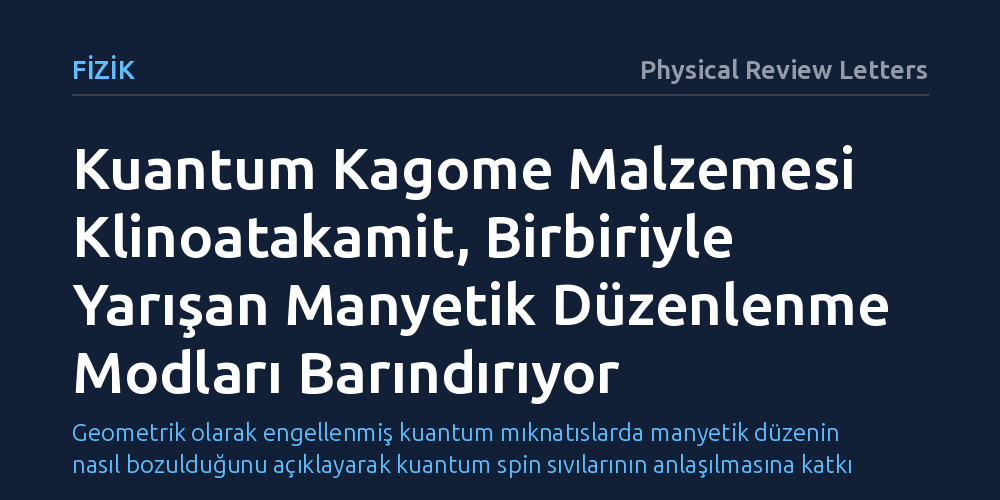

FIZIK · Physical Review Letters · 2026-09-09
Kuantum spin sıvısı adayı herbertsmithitin ana bileşiği olan klinoatakamitin manyetik yapısı yoğunluk fonksiyoneli teorisiyle incelendi. Çalışma, bu bozulmuş kagome malzemesinde tek bir manyetik yapı yerine birbiriyle yarışan farklı düzenlenme modlarının var olduğunu ortaya koydu.
Geometrik olarak engellenmiş kuantum mıknatıslarda manyetik düzenin nasıl bozulduğunu açıklayarak kuantum spin sıvılarının anlaşılmasına katkı sağlar.

Manyetik malzemeler normal şartlarda atomlarının manyetik momentlerini belirli bir doğrultuda hizalayarak düzenli bir yapı kurar. Ancak bazı özel kristal kafeslerinde atomlar üçgen geometrilerde dizildiğinde, komşu manyetik spinlerin birbirini zıt yönde hizalama eğilimi geometrik bir çıkmaza girer. Manyetik engellenme olarak adlandırılan bu durum, malzemenin alışılagelmiş bir manyetik düzene geçmesini zorlaştırır ve egzotik kuantum hallerinin ortaya çıkmasına zemin hazırlar.
Klinoatakamit minerali, modern fizikçilerin kuantum spin sıvısı arayışında en önemli adaylardan biri kabul edilen herbertsmithitin ana bileşiğidir. Bu malzemenin örgüsündeki yapısal bozulmalar ve içerdiği karmaşık etkileşimler, fizik dünyasında uzun süredir aydınlatılamayan temel bir bilmece olarak kalmıştır. Araştırmanın odağındaki soru, bu bozulmuş kagome geometrisinde manyetik momentlerin nasıl bir davranış sergilediğidir.
Klinoatakamitin karmaşık yapısını çözmek amacıyla araştırmacılar, malzemenin mikroskobik elektronik yapısını ve manyetik özelliklerini kuramsal hesaplamalarla mercek altına aldı. Çalışmada, kuantum mekaniksel çok parçacıklı sistemlerin davranışını modellemede temel standart olan yoğunluk fonksiyoneli teorisi kullanıldı.
Bu simülasyon yaklaşımı sayesinde kristal kafesindeki farklı bakır konumları arasındaki manyetik bağların gücü ve elektron etkileşimleri hesaplandı. Malzemenin geometrik bozulmasının, atomlar arasındaki manyetik etkileşim yollarını nasıl farklılaştırdığı ayrıntılı olarak modellendi.
Elde edilen sonuçlar, klinoatakamitte tek ve baskın bir manyetik düzenin bulunmadığını gösterdi. Yapıdaki geometrik bozulma nedeniyle sistemde birbiriyle yarışan birden fazla manyetik düzenlenme modu aynı anda ortaya çıkmaktadır.
Farklı bakır konumları arasındaki etkileşimlerin birbiriyle rekabet içinde olması, malzemenin kararlı tek bir manyetik faz seçmesini engellemektedir. Bu yarış, klinoatakamitin düşük sıcaklıklarda sergilediği karmaşık faz geçişlerinin ve deneysel belirsizliklerin mikroskobik kaynağını açıklamaktadır.
Klinoatakamitteki yarışan manyetik modların haritalandırılması, kuantum spin sıvıları gibi egzotik hallerin hangi mekanizmalarla ortaya çıktığını anlamak için kritik bir adımdır. Geometrik bozulmanın manyetik etkileşimleri nasıl şekillendirdiğini bilmek, benzer kuantum malzemelerinin davranışını öngörmeyi kolaylaştırır.
Bu bulgu, engellenmiş kuantum mıknatıslarda küçük kristal bozulmalarının bile zengin ve karmaşık manyetik haller doğurabileceğini göstermektedir. İlerleyen dönemde kuantum bilişim ve ileri manyetik teknolojiler için malzeme tasarlanırken bu tür yarışan etkileşimlerin dengelenmesi temel bir rol oynayacaktır.